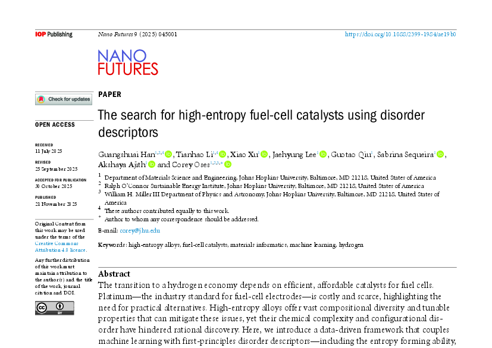
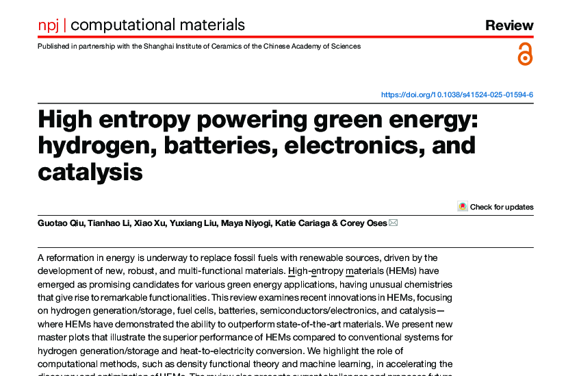
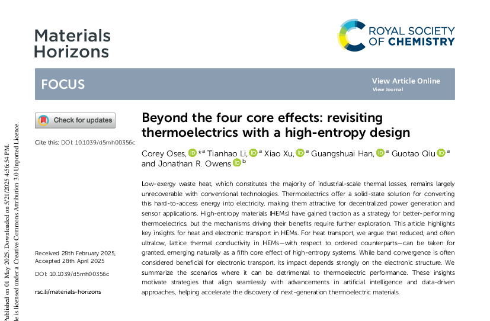
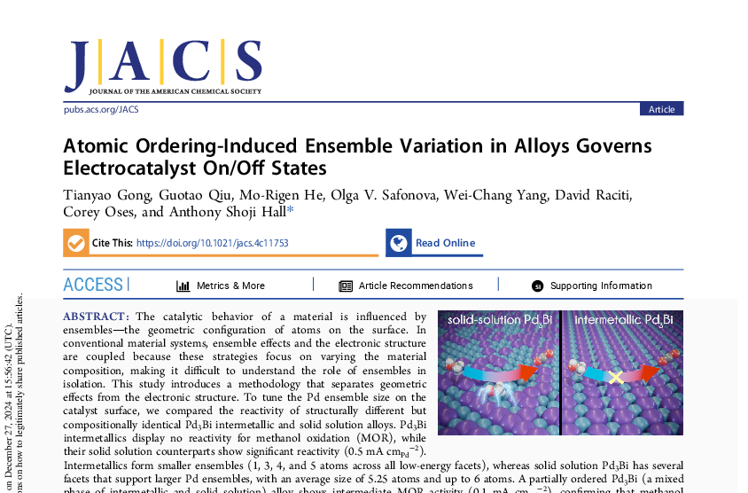
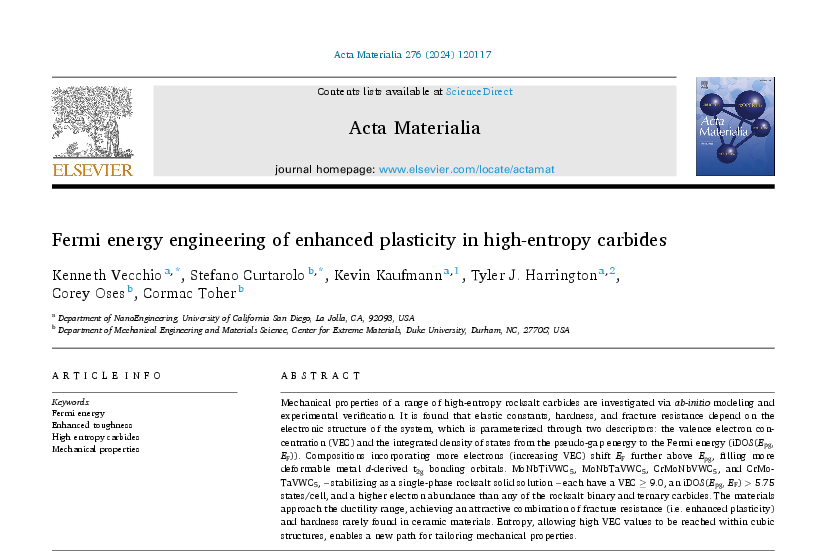
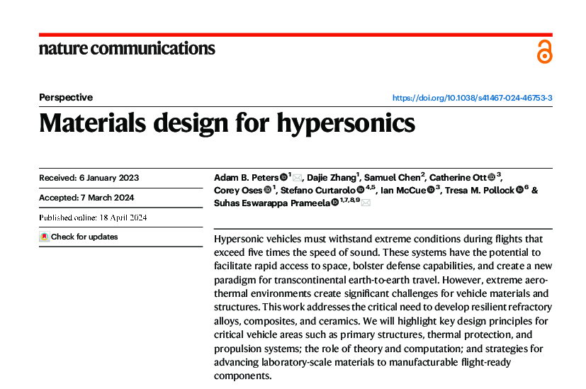
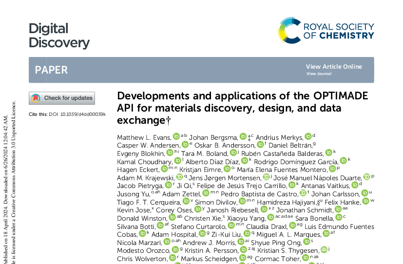
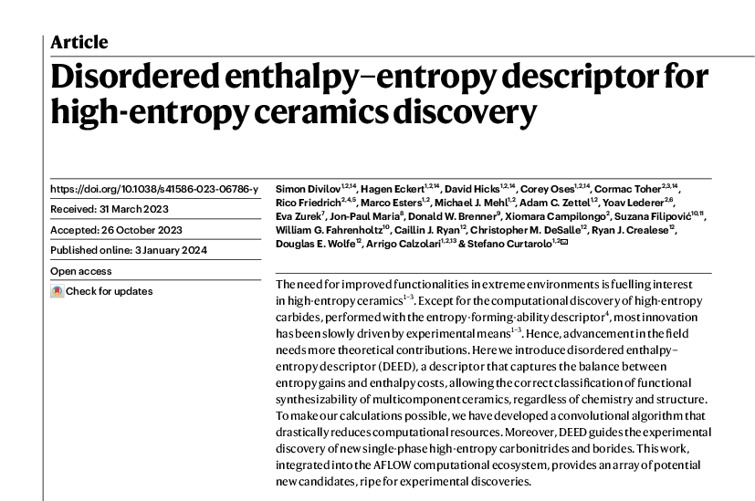
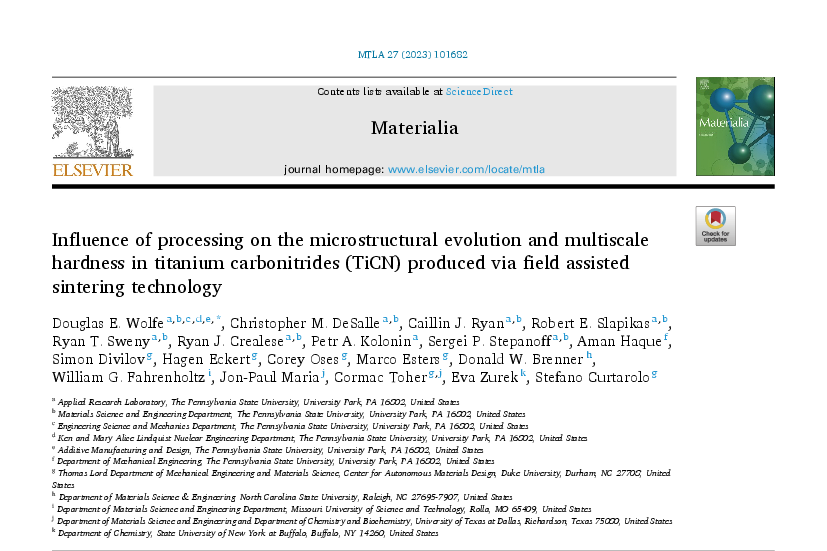
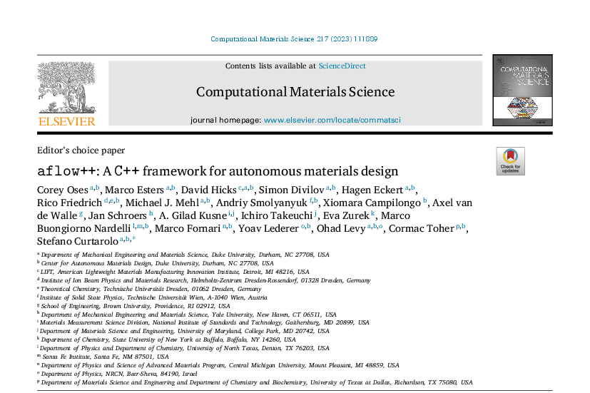

Assistant Professor
2022–present
Johns Hopkins University
- Joint appointment, Department of Physics and Astronomy (2025–present)
Materials Science and Engineering, Johns Hopkins University
Physics and Astronomy (joint), Johns Hopkins University

The search for high-entropy fuel-cell catalysts using disorder descriptors
High entropy powering green energy: hydrogen, batteries, electronics, and catalysis
Beyond the four core effects: revisiting thermoelectrics with a high-entropy design
Atomic Ordering-Induced Ensemble Variation in Alloys Governs Electrocatalyst On/Off States
Fermi energy engineering of enhanced plasticity in high-entropy carbides
Materials Design for Hypersonics
Developments and applications of the OPTIMADE API for materials discovery, design, and data exchange
Disordered enthalpy-entropy descriptor for high-entropy ceramics discovery
Influence of Processing on the Microstructural Evolution and Multiscale Hardness in Titanium Carbonitrides (TiCN) Produced via Field Assisted Sintering Technology
aflow++: a C++ framework for autonomous materials designDepartment: Mechanical Engineering and Materials Science
Thesis: Machine learning, phase stability, and disorder with the Automatic Flow Framework for Materials Discovery
DukeSpace: link
Department: Applied and Engineering Physics
Thesis: Plume Propagation Simulation for Pulsed Laser Deposition
APL Machine Learning
Structural benchmarks overlook density-of-states errors in machine-learned interatomic potentials
APL Mach. Learn. in press (2026)
Authors: S.-Y. Tseng, G. Han, T. Li, X. Xu, J. Hu, G. Qiu & C. Oses*
DOI: 10.1063/5.0339982.Precision Chemistry
Stabilizing Iodine in Pyrochlore: Toward New Nuclear Waste Forms
Precis. Chem. 4(8), 1211–1224 (2026)
Authors: X. Xu, G. Han, T. Li, J. Hu, G. Qiu, S.-Y. Tseng, G. H. Han, A. Dupuy, A. S. Hall & C. Oses*
DOI: 10.1021/prechem.5c00467. [PDF]Nano Futures
The search for high-entropy fuel-cell catalysts using disorder descriptors
Nano Futures 9, 045001 (2025)
Authors: G. Han†, T. Li†, X. Xu, J. Lee, S. Sequeira, A. Ajith & C. Oses*
DOI: 10.1088/2399-1984/ae19b0. [PDF]Materials Horizons
Beyond the four core effects: revisiting thermoelectrics with a high-entropy design
Mater. Horiz. 12(16), 5946–5956 (2025)
Authors: C. Oses*, T. Li, X. Xu, G. Han, G. Qiu & J. R. Owens
npj Computational Materials
High entropy powering green energy: hydrogen, batteries, electronics, and catalysis
npj Comput. Mater. 11, 145 (2025)
Authors: G. Qiu, T. Li, X. Xu, Y. Liu, M. Niyogi, K. Cariaga & C. Oses*
DOI: 10.1038/s41524-025-01594-6. [PDF]Journal of the American Chemical Society
Atomic Ordering-Induced Ensemble Variation in Alloys Governs Electrocatalyst On/Off States
J. Am. Chem. Soc. 147(1), 510–518 (2024)
Authors: T. Gong, G. Qiu, M.-R. He, O. V. Safonova, W.-C. Yang, D. Raciti, C. Oses & A. S. Hall
DOI: 10.1021/jacs.4c11753.Acta Materialia
Fermi energy engineering of enhanced plasticity in high-entropy carbides
Acta Mater. 276, 120117 (2024)
Authors: K. S. Vecchio, S. Curtarolo, K. Kaufmann, T. J. Harrington, C. Oses & C. Toher
DOI: 10.1016/j.actamat.2024.120117. [PDF]Digital Discovery
Developments and applications of the OPTIMADE API for materials discovery, design, and data exchange
Digit. Discov. 3, 1509–1533 (2024)
Authors: M. L. Evans, J. Bergsma, A. Merkys, C. W. Andersen, O. B. Andersson, D. Beltrán, E. Blokhin, T. M. Boland, R. Castañeda Balderas, K. Choudhary, A. Díaz Díaz, R. Domínguez García, H. Eckert, K. Eimre, M. E. Fuentes-Montero, A. M. Krajewski, J. J. Mortensen, J. M. Nápoles-Duarte, J. Pietryga, J. Qi, F. d. J. Trejo Carrillo, A. Vaitkus, J. Yu, A. C. Zettel, P. Baptista de Castro, J. Carlsson, T. F. T. Cerqueira, S. Divilov, H. Hajiyani, F. Hanke, K. Jose, C. Oses, J. Riebesell, J. Schmidt, D. Winston, C. Xie, X. Yang, S. Bonella, S. Botti, S. Curtarolo, C. Draxl, L. E. Fuentes Cobas, A. Hospital, Z.-K. Liu, M. A. L. Marques, N. Marzari, A. J. Morris, S. P. Ong, M. Orozco, K. A. Persson, K. S. Thygesen, C. Wolverton, M. Scheidgen, C. Toher, G. J. Conduit, G. Pizzi, S. Gražulis, G.-M. Rignanese & R. Armiento
DOI: 10.1039/D4DD00039K. [PDF]Nature
Disordered enthalpy-entropy descriptor for high-entropy ceramics discovery
Nature 625, 66–73 (2024)
Authors: S. Divilov†, H. Eckert†, D. Hicks†, C. Oses†, C. Toher†, R. Friedrich, M. Esters, M. J. Mehl, A. C. Zettel, Y. Lederer, E. Zurek, J.-P. Maria, D. W. Brenner, X. Campilongo, S. Filipović, W. G. Fahrenholtz, C. J. Ryan, C. M. DeSalle, R. J. Crealese, D. E. Wolfe, A. Calzolari & S. Curtarolo
DOI: 10.1038/s41586-023-06786-y. [PDF]Nature Communications
Materials Design for Hypersonics
Nat. Commun. 15, 3328 (2024)
Authors: A. B. Peters, D. Zhang, S. Chen, C. Ott, C. Oses, S. Curtarolo, I. McCue, T. Pollock & S. E. Prameela
Materialia
Influence of Processing on the Microstructural Evolution and Multiscale Hardness in Titanium Carbonitrides (TiCN) Produced via Field Assisted Sintering Technology
Materialia 27, 101682 (2023)
Authors: D. E. Wolfe, C. M. DeSalle, C. J. Ryan, R. E. Slapikas, R. T. Sweny, R. J. Crealese, P. A. Kolonin, S. P. Stepanoff, A. Haque, S. Divilov, H. Eckert, C. Oses, M. Esters, D. W. Brenner, W. G. Fahrenholtz, J.-P. Maria, C. Toher, E. Zurek & S. Curtarolo
DOI: 10.1016/j.mtla.2023.101682.Computational Materials Science
aflow++: a C++ framework for autonomous materials design
Comput. Mater. Sci. 217, 111889 (2023)
Authors: C. Oses, M. Esters, D. Hicks, S. Divilov, H. Eckert, R. Friedrich, M. J. Mehl, A. Smolyanyuk, X. Campilongo, A. van de Walle, J. Schroers, A. G. Kusne, I. Takeuchi, E. Zurek, M. Buongiorno Nardelli, M. Fornari, Y. Lederer, O. Levy, C. Toher & S. Curtarolo
Computational Materials Science
aflow.org: a web ecosystem of databases, software and tools
Comput. Mater. Sci. 216, 111808 (2023)
Authors: M. Esters, C. Oses, S. Divilov, H. Eckert, R. Friedrich, D. Hicks, M. J. Mehl, F. Rose, A. Smolyanyuk, A. Calzolari, X. Campilongo, C. Toher & S. Curtarolo
DOI: 10.1016/j.commatsci.2022.111808. [PDF]Acta Materialia
QH-POCC: taming tiling entropy in thermal expansion calculations of disordered materials
Acta Mater. 245, 118594 (2023)
Authors: M. Esters†, A. Smolyanyuk†, C. Oses, D. Hicks, S. Divilov, H. Eckert, X. Campilongo, C. Toher & S. Curtarolo
DOI: 10.1016/j.actamat.2022.118594. [PDF]Nature Communications
Plasmonic high-entropy carbides
Nat. Commun. 13, 5993 (2022)
Authors: A. Calzolari, C. Oses, C. Toher, M. Esters, X. Campilongo, S. P. Stepanoff, D. E. Wolfe & S. Curtarolo
DOI: 10.1038/s41467-022-33497-1. [PDF]Angewandte Chemie
The Microscopic Diamond Anvil Cell: Stabilization of Superhard, Superconducting Carbon Allotropes at Ambient Pressure
Angew. Chem. 61(32), e202205129 (2022)
Authors: X. Wang, D. M. Proserpio, C. Oses, C. Toher, S. Curtarolo & E. Zurek
DOI: 10.1002/anie.202205129.Electronic Structure
Roadmap on Machine Learning in Electronic Structure
Electron. Struct. 4(2), 023004 (2022)
Authors: H. J. Kulik, T. Hammerschmidt, J. Schmidt, S. Botti, M. A. L. Marques, M. Boley, M. Scheffler, M. Todorović, P. Rinke, C. Oses, A. Smolyanyuk, S. Curtarolo, A. Tkatchenko, A. P. Bartók, S. Manzhos, M. Ihara, T. Carrington, J. Behler, O. Isayev, M. Veit, A. Grisafi, J. Nigam, M. Ceriotti, K. T. Schütt, J. Westermayr, M. Gastegger, R. J. Maurer, B. Kalita, K. Burke, R. Nagai, R. Akashi, O. Sugino, J. Hermann, F. Noé, S. Pilati, C. Draxl, M. Kuban, S. Rigamonti, M. Scheidgen, M. Esters, D. Hicks, C. Toher, P. V. Balachandran, I. Tamblyn, S. Whitelam, C. Bellinger & L. M. Ghiringhelli
DOI: 10.1088/2516-1075/ac572f. [PDF]Frontiers in Physics
Physics in the Machine: Integrating Physical Knowledge in Autonomous Phase-Mapping
Front. Phys. 10, 815863 (2022)
Authors: A. G. Kusne, A. McDannald, B. DeCost, C. Oses, C. Toher, S. Curtarolo, A. Mehta & I. Takeuchi
DOI: 10.3389/fphy.2022.815863. [PDF]MRS Bulletin
High-entropy ceramics: Propelling applications through disorder
MRS Bull. 47, 194–202 (2022)
Authors: C. Toher, C. Oses, M. Esters, D. Hicks, G. N. Kotsonis, C. M. Rost, D. W. Brenner, J.-P. Maria & S. Curtarolo
DOI: 10.1557/s43577-022-00281-x.Nature Communications
Settling the matter of the role of vibrations in the stability of high-entropy carbides
Nat. Commun. 12, 5747 (2021)
Authors: M. Esters, C. Oses, D. Hicks, M. J. Mehl, M. Jahnátek, M. D. Hossain, J.-P. Maria, D. W. Brenner, C. Toher & S. Curtarolo
Advanced Materials
Entropy Landscaping of High-Entropy Carbides
Adv. Mater. 33(42), 2102904 (2021)
Authors: M. D. Hossain, T. Borman, C. Oses, M. Esters, C. Toher, L. Feng, A. Kumar, W. G. Fahrenholtz, S. Curtarolo, D. W. Brenner, J. M. LeBeau & J.-P. Maria
DOI: 10.1002/adma.202102904.Scientific Data
OPTIMADE: an API for exchanging materials data
Sci. Data 8, 217 (2021)
Authors: C. W. Andersen†, R. Armiento†, E. Blokhin†, G. J. Conduit†, S. Dwaraknath†, M. L. Evans†, Á. Fekete†, A. Gopakumar†, S. Gražulis†, A. Merkys†, F. Mohamed†, C. Oses†, G. Pizzi†, G.-M. Rignanese†, M. Scheidgen†, L. Talirz†, C. Toher†, D. Winston†, R. Aversa, K. Choudhary, P. Colinet, S. Curtarolo, D. Di Stefano, C. Draxl, S. Er, M. Esters, M. Fornari, M. Giantomassi, M. Govoni, G. Hautier, V. Hegde, M. K. Horton, P. Huck, G. Huhs, J. Hummelshøj, A. Kariryaa, B. Kozinsky, S. Kumbhar, M. Liu, N. Marzari, A. J. Morris, A. Mostofi, K. A. Persson, G. Petretto, T. Purcell, F. Ricci, F. Rose, M. Scheffler, D. Speckhard, M. Uhrin, A. Vaitkus, P. Villars, D. Waroquiers, C. Wolverton, M. Wu & X. Yang
DOI: 10.1038/s41597-021-00974-z. [PDF]Physical Review Materials
Automated coordination corrected enthalpies with AFLOW-CCE
Phys. Rev. Mater. 5, 043803 (2021)
Authors: R. Friedrich, M. Esters, C. Oses, S. Ki, M. J. Brenner, D. Hicks, M. J. Mehl, C. Toher & S. Curtarolo
DOI: 10.1103/PhysRevMaterials.5.043803.Computational Materials Science
The AFLOW Library of Crystallographic Prototypes: Part 3
Comput. Mater. Sci. 199, 110450 (2021)
Authors: D. Hicks, M. J. Mehl, M. Esters, C. Oses, O. Levy, G. L. W. Hart, C. Toher & S. Curtarolo
DOI: 10.1016/j.commatsci.2021.110450.Physical Review Materials
Tin-pest problem as a test of density functionals using high-throughput calculations
Phys. Rev. Mater. 5, 083608 (2021)
Authors: M. J. Mehl, M. Ronquillo, D. Hicks, M. Esters, C. Oses, R. Friedrich, A. Smolyanyuk, E. Gossett, D. Finkenstadt & S. Curtarolo
DOI: 10.1103/PhysRevMaterials.5.083608.Acta Materialia
Carbon Stoichiometry and Mechanical Properties of High Entropy Carbides
Acta Mater. 215, 117051 (2021)
Authors: M. D. Hossain†, T. Borman†, A. Kumar, X. Chen, A. Khosravani, S. R. Kalidindi, E. A. Paisley, M. Esters, C. Oses, C. Toher, S. Curtarolo, J. M. LeBeau, D. W. Brenner & J.-P. Maria
DOI: 10.1016/j.actamat.2021.117051.Nature Communications
On-the-fly Closed-loop Autonomous Materials Discovery via Bayesian Active Learning
Nat. Commun. 11, 5966 (2020)
Authors: A. G. Kusne†, H. Yu†, C. Wu, H. Zhang, J. Hattrick-Simpers, B. DeCost, S. Sarker, C. Oses, C. Toher, S. Curtarolo, A. V. Davydov, R. Agarwal, L. A. Bendersky, M. Li, A. Mehta & I. Takeuchi
DOI: 10.1038/s41467-020-19597-w. [PDF]npj Computational Materials
Discovery of novel high-entropy ceramics via machine learning
npj Comput. Mater. 6, 42 (2020)
Authors: K. Kaufmann, D. Maryanovsky, W. M. Mellor, C. Zhu, A. S. Rosengarten, T. J. Harrington, C. Oses, C. Toher, S. Curtarolo & K. S. Vecchio
DOI: 10.1038/s41524-020-0317-6. [PDF]Nature Reviews Materials
High-entropy ceramics
Nat. Rev. Mater. 5, 295–309 (2020)
Authors: C. Oses, C. Toher & S. Curtarolo
Acta Materialia
Metallic glasses for biodegradable implants
Acta Mater. 176, 297–305 (2019)
Authors: D. C. Ford, D. Hicks, C. Oses, C. Toher & S. Curtarolo
DOI: 10.1016/j.actamat.2019.07.008.npj Computational Materials
Predicting Superhard Materials via a Machine Learning Informed Evolutionary Structure Search
npj Comput. Mater. 5, 89 (2019)
Authors: P. Avery, X. Wang, C. Oses, E. Gossett, D. M. Proserpio, C. Toher, S. Curtarolo & E. Zurek
DOI: 10.1038/s41524-019-0226-8. [PDF]npj Computational Materials
Unavoidable disorder and entropy in multi-component systems
npj Comput. Mater. 5, 69 (2019)
npj Computational Materials
Coordination corrected ab initio formation enthalpies
npj Comput. Mater. 5, 59 (2019)
Authors: R. Friedrich, D. Usanmaz, C. Oses, A. R. Supka, M. Fornari, M. Buongiorno Nardelli, C. Toher & S. Curtarolo
DOI: 10.1038/s41524-019-0192-1. [PDF]Physical Review Materials
AFLOW-QHA3P: Robust and automated method to compute thermodynamic properties of solids
Phys. Rev. Mater. 3, 073801 (2019)
Authors: P. Nath, D. Usanmaz, D. Hicks, C. Oses, M. Fornari, M. Buongiorno Nardelli, C. Toher & S. Curtarolo
DOI: 10.1103/PhysRevMaterials.3.073801.Journal of Chemical Information and Modeling
AFLOW-CHULL: Cloud-oriented platform for autonomous phase stability analysis
J. Chem. Inf. Model. 58(12), 2477–2490 (2018)
Authors: C. Oses, E. Gossett, D. Hicks, F. Rose, M. J. Mehl, E. Perim, I. Takeuchi, S. Sanvito, M. Scheffler, Y. Lederer, O. Levy, C. Toher & S. Curtarolo
DOI: 10.1021/acs.jcim.8b00393.MRS Bulletin
Data-driven design of inorganic materials with the Automatic Flow Framework for Materials Discovery
MRS Bull. 43(9), 670–675 (2018)
Authors: C. Oses, C. Toher & S. Curtarolo
DOI: 10.1557/mrs.2018.207.Nature Communications
High-entropy high-hardness metal carbides discovered by entropy descriptors
Nat. Commun. 9, 4980 (2018)
Authors: P. Sarker†, T. J. Harrington†, C. Toher, C. Oses, M. Samiee, J.-P. Maria, D. W. Brenner, K. S. Vecchio & S. Curtarolo
DOI: 10.1038/s41467-018-07160-7. [PDF]npj Computational Materials
Machine learning modeling of superconducting critical temperature
npj Comput. Mater. 4, 29 (2018)
Authors: V. Stanev, C. Oses, A. G. Kusne, E. Rodriguez, J. Paglione, S. Curtarolo & I. Takeuchi
DOI: 10.1038/s41524-018-0085-8. [PDF]Computational Materials Science
AFLOW-ML: A RESTful API for machine-learning prediction of materials properties
Comput. Mater. Sci. 152, 134–145 (2018)
Authors: E. Gossett, C. Toher, C. Oses, O. Isayev, F. Legrain, F. Rose, E. Zurek, J. Carrete, N. Mingo, A. Tropsha & S. Curtarolo
Acta Crystallographica Section A
AFLOW-SYM: platform for the complete, automatic and self-consistent symmetry analysis of crystals
Acta Cryst. A 74, 184–203 (2018)
Authors: D. Hicks, C. Oses, E. Gossett, G. Gomez, R. H. Taylor, C. Toher, M. J. Mehl, O. Levy & S. Curtarolo
DOI: 10.1107/S2053273318003066.Inorganic Chemistry
The structure and composition statistics of 6A binary and ternary structures
Inorg. Chem. 57(2), 653–667 (2017)
Authors: A. Hever, C. Oses, S. Curtarolo, O. Levy & A. Natan
DOI: 10.1021/acs.inorgchem.7b02462.Computational Materials Science
AFLUX: The LUX materials search API for the AFLOW data repositories
Comput. Mater. Sci. 137, 362–370 (2017)
Authors: F. Rose, C. Toher, E. Gossett, C. Oses, M. Buongiorno Nardelli, M. Fornari & S. Curtarolo
Nature Communications
Universal Fragment Descriptors for Predicting Properties of Inorganic Crystals
Nat. Commun. 8, 15679 (2017)
Authors: O. Isayev†, C. Oses†, C. Toher, E. Gossett, S. Curtarolo & A. Tropsha
DOI: 10.1038/ncomms15679. [PDF]Physical Review Materials
Combining the AFLOW GIBBS and elastic libraries to efficiently and robustly screen thermomechanical properties of solids
Phys. Rev. Mater. 1, 015401 (2017)
Authors: C. Toher, C. Oses, J. J. Plata, D. Hicks, F. Rose, O. Levy, M. de Jong, M. Asta, M. Fornari, M. Buongiorno Nardelli & S. Curtarolo
DOI: 10.1103/PhysRevMaterials.1.015401.Acta Materialia
A Computational High-Throughput Search for New Ternary Superalloys
Acta Mater. 122, 438–447 (2017)
Authors: C. Nyshadham, C. Oses, J. E. Hansen, I. Takeuchi, S. Curtarolo & G. L. W. Hart
DOI: 10.1016/j.actamat.2016.09.017.Science Advances
Accelerated Discovery of New Magnets in the Heusler Alloy Family
Sci. Adv. 3(4), e1602241 (2017)
Authors: S. Sanvito, C. Oses, J. Xue, A. Tiwari, M. Žic, T. Archer, P. Tozman, M. Venkatesan, J. M. D. Coey & S. Curtarolo
DOI: 10.1126/sciadv.1602241. [PDF]Physical Review X
High-Throughput Computation of Thermal Conductivity of High-Temperature Solid Phases: The Case of Oxide and Fluoride Perovskites
Phys. Rev. X 6(4), 041061 (2016)
Authors: A. van Roekeghem, J. Carrete, C. Oses, S. Curtarolo & N. Mingo
DOI: 10.1103/PhysRevX.6.041061. [PDF]Chemistry of Materials
Modeling Off-Stoichiometry Materials with a High-Throughput Ab-Initio Approach
Chem. Mater. 28(18), 6484–6492 (2016)
Authors: K. Yang, C. Oses & S. Curtarolo
DOI: 10.1021/acs.chemmater.6b01449.Computational Materials Science
The AFLOW Standard for High-Throughput Materials Science Calculations
Comput. Mater. Sci. 108A, 233–238 (2015)
Authors: C. E. Calderon, J. J. Plata, C. Toher, C. Oses, O. Levy, M. Fornari, A. Natan, M. J. Mehl, G. L. W. Hart, M. Buongiorno Nardelli & S. Curtarolo
Chemistry of Materials
Materials Cartography: Representing and Mining Materials Space Using Structural and Electronic Fingerprints
Chem. Mater. 27(3), 735–743 (2015)
Authors: O. Isayev, D. Fourches, E. N. Muratov, C. Oses, K. M. Rasch, A. Tropsha & S. Curtarolo
PDF links are provided for open-access articles and for the author's own version where the publisher permits it. For a copy of any other article, please email me.
Automated computation of materials properties
Materials Informatics: Methods, Tools and Applications, Ch. 7
Authors: C. Toher, C. Oses & S. Curtarolo
DOI: 10.1002/9783527802265.ch7.Machine learning and high-throughput approaches to magnetism
Handbook of Materials Modeling. Volume 2 Applications: Current and Emerging Materials
Authors: S. Sanvito, M. Žic, J. Nelson, T. Archer, C. Oses & S. Curtarolo
DOI: 10.1007/978-3-319-50257-1_108-1.The AFLOW Fleet for Materials Discovery
Handbook of Materials Modeling. Volume 1 Methods: Theory and Modeling
Authors: C. Toher, C. Oses, D. Hicks, E. Gossett, F. Rose, P. Nath, D. Usanmaz, D. C. Ford, E. Perim, C. E. Calderon, J. J. Plata, Y. Lederer, M. Jahnátek, W. Setyawan, S. Wang, J. Xue, K. M. Rasch, R. V. Chepulskii, R. H. Taylor, G. Gomez, H. Shi, A. R. Supka, R. Al Rahal Al Orabi, P. Gopal, F. T. Cerasoli, L. Liyanage, H. Wang, I. Siloi, L. A. Agapito, C. Nyshadham, G. L. W. Hart, J. Carrete, F. Legrain, N. Mingo, E. Zurek, O. Isayev, A. Tropsha, S. Sanvito, R. M. Hanson, I. Takeuchi, M. J. Mehl, A. N. Kolmogorov, K. Yang, P. D'Amico, A. Calzolari, M. Costa, R. De Gennaro, M. Buongiorno Nardelli, M. Fornari, O. Levy & S. Curtarolo
DOI: 10.1007/978-3-319-42913-7_63-2.Powering Tomorrow with AI-Driven High-Entropy Design
Invited talk for the Symposium on “High-Entropy Ceramics” at the CIMTEC International Conferences on Modern Materials and Technologies 2026; 16th International Ceramics Congress, Perugia, Italy (Jun 21, 2026).
Powering Tomorrow with AI-Driven High-Entropy Design
Invited talk for the Session on “Computational Materials” at the GE Vernova's Material Frontier Symposium: Powering the Future, Niskayuna, NY (Jun 03, 2026).
Powering Tomorrow with AI-Driven High-Entropy Design
Invited talk for the Symposium on “Engineering Complexity—High Entropy Ceramics as a Design Platform for Next-Generation Materials” at the MRS 2026 Spring Meeting & Exhibit, Honolulu, HI (May 01, 2026).
The Intersection of Energy, Entropy, and Exploration: Data-Driven Discovery of High-Entropy Materials
Invited talk for the Session on “Data-Driven Thin Film Design: High-Throughput Experimentation, Simulation, and Machine Learning” at the International Conference on Metallurgical Coatings and Thin Films (ICMCTF) 2026, San Diego, CA (Apr 20, 2026).
Powering Tomorrow with AI-Driven High-Entropy Design
Invited talk for the Material Sciences Strategy Offsite for the Johns Hopkins University Applied Physics Laboratory Section R1A, Washington, DC (Mar 26, 2026).
Powering Tomorrow with AI-Driven High-Entropy Design
Invited seminar for the Departmental Seminar Series at the Department of Materials Science and Engineering at the University of Maryland, College Park, MD (Mar 25, 2026).
From Data to Discovery: Active Learning Unlocks Complex Ceramic Design Spaces
Invited talk for the Symposium on “Advances in Ceramic Materials and Processing” at the TMS 2026 Annual Meeting & Exhibition, San Diego, CA (Mar 16, 2026).
From Data to Discovery: Active Learning Unlocks Complex Ceramic Design Spaces
Invited talk for the Mini Symposium on “Computational Thermodynamics: Energy and Energy Landscape” at the 2025 SIAM New York-New Jersey-Pennsylvania Section Conference, University Park, PA (Nov 02, 2025).
AI Materials Discovery for Nuclear Waste and Spent Fuel Immobilization
Invited talk for the 2025 Annual Fission Workshop of the Advanced Research Projects Agency-Energy (ARPA-E), Arlington, VA (Oct 02, 2025).
High-Entropy Alloys and Halides: Expanding the Energy-Materials Space
Invited talk for the Symposium on “Advances in Refractory High Entropy Alloys and Ceramics” at the MS&T25 Technical Meeting and Exhibition, Columbus, OH (Sep 30, 2025).
Accelerating Energy Solutions with High-Entropy Materials: Leveraging Disorder, Computation, and AI
Invited talk for The Advanced Materials Show at MS&T25 Technical Meeting and Exhibition, Columbus, OH (Sep 30, 2025).
High-Entropy Oxides and Halides: Expanding the Energy-Materials Space
Invited talk for the Artificial Intelligence for Materials Science (AIMS) Workshop at the National Institute of Standards and Technology (NIST), Rockville, MD (Jun 10, 2025).
High-Entropy Halides: Expanding the Energy-Materials Space
Invited talk for the Symposium on “High Entropy and Complex Structure for Electrocatalysis and Other Applications” at the ACS Spring 2025 Meeting & Expo, San Diego, CA (Mar 25, 2025).
High-Entropy Halides: Expanding the Energy-Materials Space
Invited talk for the Symposium on “Advances in Ceramic Materials and Processing” at the TMS 2025 Annual Meeting & Exhibition, Las Vegas, NV (Mar 24, 2025).
Metal Iodide Materials for Energy Applications
Invited talk for the Symposium on “Understanding High Entropy Materials Via Data-Science and Computational Approaches” at the MS&T24 Technical Meeting and Exhibition, Pittsburgh, PA (Oct 09, 2024).
Success Stories in Computationally–Driven Materials Discovery
Invited seminar for the Departmental Seminar Series at the Department of Materials Science and Engineering at the University of Connecticut, Storrs, CT (Sep 27, 2024).
Disorder by design: Applications and modeling of high-entropy ceramics
Invited talk for the Symposium on “Advancing Ab-Initio Force Fields with Machine-Learning for Energy Materials” at the International Conference on Computational & Experimental Engineering and Sciences (ICCES 2024), Singapore (Aug 04, 2024).
Success Stories in Computationally–Driven Materials Discovery
Invited seminar for the Departmental Seminar Series at the Department of Chemical and Nano Engineering at the University of California, San Diego, San Diego, CA (May 01, 2024).
Disorder by design: Applications and modeling of high-entropy ceramics
Invited seminar for the Departmental Seminar Series at the University of Michigan, Ann Arbor, MI (Mar 04, 2024).
Bayesian Optimization of the PhD (and beyond)
Keynote for the Fifth Annual Research Summit for the University Center of Exemplary Mentoring at Duke University, Durham, NC (Feb 29, 2024).
Success Stories in Computationally–Driven Materials Discovery
Invited seminar for the Materials Science and Engineering Fall Seminar Series at the Rensselaer Polytechnic Institute, Troy, NY (Oct 18, 2023).
Success Stories in Computationally–Driven Materials Discovery
Invited seminar for the Physics Department Colloquium at Georgetown University, Washington, DC (Sep 26, 2023).
Computational Materials Science
Invited seminar for the PARADIM Summer School, Johns Hopkins University (Aug 02, 2023).
Success Stories in Computationally–Driven Materials Discovery
Invited seminar for the OneChemistry Symposium, Johns Hopkins University (Apr 18, 2023).
Disorder by design: Applications and modeling of high-entropy ceramics
Invited seminar for the Johns Hopkins University Applied Physics Laboratory, Baltimore, Maryland (Mar 09, 2023).
Success Stories in Computationally–Driven Materials Discovery
Invited seminar for the Computational Spintronics Group, Trinity College Dublin, Ireland (Feb 17, 2023).
Success Stories in Computationally–Driven Materials Discovery
Invited seminar for the Physics Department Colloquium at Johns Hopkins University, Baltimore, Maryland (Feb 15, 2023).
Disorder by design: Applications and modeling of high-entropy ceramics
Invited seminar for the Hopkins Extreme Materials Institute at Johns Hopkins University, Baltimore, Maryland (Nov 01, 2022).
Formation Descriptors for High-Entropy High-Hardness Metal Carbides
Invited talk for the Machine Learning in Ceramics and Glasses Webinar at the Institute of Materials, Minerals and Mining (IOM3), London, UK (Mar 29, 2022).
High-entropy ceramics
Invited seminar for the Department of Materials Science and Engineering at Michigan Technological University, Houghton, Michigan (Mar 17, 2022).
High-entropy ceramics
Invited seminar for the Department of Materials Science and Engineering at the University of California, Irvine, Irvine, CA (Mar 04, 2022).
Disorder by design: Applications and modeling of high-entropy ceramics
Invited seminar for the Department of Materials Science and Engineering at Texas A&M University, College Station, Texas (Feb 10, 2022).
High-entropy ceramics
Invited seminar for the Department of Physics at the University of Alabama at Birmingham, Birmingham, Alabama (Feb 04, 2022).
High-entropy ceramics
Invited seminar for the Department of Mechanical Engineering at Rowan University, Glassboro, NJ (Jan 27, 2022).
High-entropy ceramics
Invited seminar for the Department of Materials Science and Engineering at Johns Hopkins University, Baltimore, MD (Jan 04, 2022).
Data for Materials Development Platforms
Invited seminar for the aiM Program Boot Camp and Orientation at Duke University, Durham, North Carolina (Aug 19, 2021).
High-entropy ceramics
Invited seminar for the Department of Mechanical Engineering at Texas A&M University, College Station, Texas (Feb 24, 2021).
High-entropy ceramics
Invited seminar for the Lecture Series in Materials Science & Engineering at the North Carolina State University, Raleigh, North Carolina (Jan 22, 2021).
Entropy and ceramics: A valuable partnership
Invited seminar for the Department of Materials and Interfaces at the Weizmann Institute of Science, Rehovot, Israel (Feb 06, 2020).
Entropy and ceramics: A valuable partnership
Invited seminar for the Sackler Center for Computational Molecular and Materials Science at Tel Aviv University, Tel Aviv, Israel (Feb 05, 2020).
Entropy and ceramics: A valuable partnership
Invited seminar for the Department of Materials Engineering at Ben-Gurion University of the Negev, Beer Sheva, Israel (Jan 29, 2020).
Going Off-Stoichiometry: Challenging Traditional Materials Discovery
Invited seminar for the Center for Computational Materials Science at the Naval Research Laboratory, Washington, DC (Jan 09, 2019).
Advancements in Materials Informatics with AFLOW
Invited seminar for the Theory Department at the Fritz-Haber-Institut der Max-Planck-Gesellschaft, Berlin, Germany (Jan 18, 2018).
Advancements in Materials Informatics with AFLOW
Invited seminar for the Physics Department at the Humboldt University of Berlin, Berlin, Germany (Jan 16, 2018).
Materials Cartography: Representing and Mining Materials Space using Structural and Electronic Fingerprints
Invited seminar for the Condensed Matter Physics Seminar Series at Brigham Young University, Provo, Utah (Feb 18, 2016).
Prior development, Duke University (2014–2022)
aflow++ (2014–2022) · Lead developer · C++ framework for autonomous materials design and high-throughput ab initio workflows · with the AFLOW Consortium (S. Curtarolo, PI, Duke University) · DOI: 10.1016/j.commatsci.2022.111889 · aflow.org · Also developed the electronic band-gap and Bader charge analysis modules; POCC, CHULL and APL are listed separately below · Continuing development of a Johns Hopkins-specific branch (2022–present).
AFLOW-POCC (2014–2022) · Lead developer · partial-occupation and disorder module for modeling off-stoichiometric and high-entropy materials · with the AFLOW Consortium · DOI: 10.1021/acs.chemmater.6b01449 & 10.1016/j.actamat.2022.118594.
AFLOW-CHULL (2014–2022) · Lead developer · cloud-oriented platform for autonomous thermodynamic phase-stability analysis · with the AFLOW Consortium · DOI: 10.1021/acs.jcim.8b00393 · aflow.org/aflow-chull.
AFLOW-APL (2014–2019) · Core developer · automatic phonon library for vibrational and thermal properties · with the AFLOW Consortium · DOI: 10.1038/s41467-021-25979-5.
aflow.org (2014–2022) · Core developer · web ecosystem of materials databases, software and tools · with the AFLOW Consortium · DOI: 10.1016/j.commatsci.2022.111808 · aflow.org.
AFLOW-SYM (2014–2019) · Contributing developer · complete, automatic and self-consistent symmetry analysis of crystals · with the AFLOW Consortium · DOI: 10.1107/S2053273318003066 · aflow.org/aflow-online.
AFLOW-CCE (2021) · Contributing developer · automated coordination-corrected formation enthalpies · with the AFLOW Consortium · DOI: 10.1103/PhysRevMaterials.5.043803 · aflow.org/aflow-online.
AFLOW-ML (2018) · Contributing developer · RESTful API for machine-learning prediction of materials properties · with the AFLOW Consortium · DOI: 10.1016/j.commatsci.2018.03.075 · aflow.org/aflow-ml.
AFLUX (2017) · Contributing developer · search API for the AFLOW data repositories · with the AFLOW Consortium · DOI: 10.1016/j.commatsci.2017.04.036 · aflow.org/API/aflux.
OPTIMADE (2021–2024) · Contributor · community API standard for exchanging materials data across databases · with the OPTIMADE Consortium · DOI: 10.1038/s41597-021-00974-z & 10.1039/D4DD00039K · optimade.org.
EN.500.113: Gateway Computing: Python, Johns Hopkins University
EN.510.466 / EN.510.666: Materials Modeling (formerly Introduction to Computational Materials Modeling), Johns Hopkins University
EN.510.501 / EN.510.502 / EN.510.809: Undergraduate Research, Research in Materials Science, and Graduate Summer Research, Johns Hopkins University
EN.510.603: Phase Transformations (T. Curk), Johns Hopkins University
EN.510.422 / EN.510.622: Micro and Nano Structured Materials and Devices (A. S. Hall), Johns Hopkins University
ME 555: Applications of Artificial Intelligence in Materials, Duke University Department of Mechanical Engineering and Materials Science
ME 555: Computational Materials Science by Examples and Applications, Duke University Department of Mechanical Engineering and Materials Science
ME 221: Structure and Properties of Solids, Duke University Department of Mechanical Engineering and Materials Science
Laboratory to Launchpad: Bringing Your Energy IP to Life
Organizer at Hopkins Bloomberg Center, Washington, DC (Jun 11, 2026).
Co-Organizers: A. G. Bregman†, S. D. Cohen & J. Erlebacher.
Navigating Early Careers in Academia
Panelist for the Materials Graduate Society at Johns Hopkins University, Baltimore, Maryland (Apr 15, 2026).
Quantum Computing in Practice: Hands On with Quantinuum
Organizer at Johns Hopkins University, Baltimore, Maryland (Feb 25–26, 2026).
Co-Organizer: G. D. Quiroz.
Mini Symposium on “Computational Thermodynamics: Energy and Energy Landscape”
Co-Organizer and Presenter at the 2025 SIAM New York-New Jersey-Pennsylvania Section Conference, University Park, PA (Oct 31–Nov 2, 2025).
Co-Organizers: Z.-K. Liu, J. Deng, T. R. Sinno & R. Wentzcovitch.
Hopkins Engineering Sampler Seminar (HESS)
Panelist for the Life Design – First Year Experience (Whiting School of Engineering) at Johns Hopkins University, Baltimore, Maryland (Sep 22, 2025).
Johns Hopkins Data Science and AI Institute Fall 2025 Symposium: AI in Daily Life
Organizer for the Fall 2025 Symposium at the Johns Hopkins Data Science and AI Institute, Baltimore, MD (Sep 16, 2025).
Co-Organizers: D. J. H. Mathews†, S. Vedula†, C. Douville†, T. Shu†, K. Vaught†, B. Ranno, S. Pagano & S. McGhee.
Data-Driven Materials Modeling Workshop
Organizer and Presenter at Johns Hopkins University, Baltimore, Maryland (May 29–31, 2024).
Co-Organizers: B. Bukowski & T. Curk.
Faculty Panel
Panelist for the Engineering Admitted Student Visit Day at Johns Hopkins University, Baltimore, Maryland (Mar 26, 2024).
Focus Session: Computational Design, Understanding and Discovery of Novel Materials
Session Chair for the March Meeting of the American Physical Society, Minneapolis, Minnesota (Mar 3–8, 2024).
Co-Chairs: E. Jankowski, R. Sundararaman & D. Usanmaz.
Foundations to Futures: Materials Data and AI
Conference Co-Chair at the Materials Research Data Alliance (MaRDA) 2024 Annual Meeting, Baltimore, Maryland (Feb 20–22, 2024).
Co-Chairs: D. Audus & F. Sen.
AI, Data Science — Developing the Role for Sustainable Energy in Hopkins' Expansion and Vision
Session Co-Chair at the ROSEI 2024 Summit, Baltimore, Maryland (Jan 17, 2024).
Co-Chair: P. Clancy.
Hopkins Engineering Sampler Seminar (HESS)
Panelist for the Life Design – First Year Experience (Whiting School of Engineering) at Johns Hopkins University, Baltimore, Maryland (Sep 19, 2023).
AFLOW School: Integrated infrastructure for computational materials discovery
Presenter for the Machine Learning for Materials Research Bootcamp of the University of Maryland/NIST/MRS, College Park, Maryland (Aug 10, 2023).
Co-Presenter: C. Toher.
Roundtable Discussion on Gateway Science/Computing Courses
Panelist for the Provost's DELTA Teaching Forum at Johns Hopkins University, Baltimore, Maryland (May 01, 2023).
AFLOW School: Integrated infrastructure for computational materials discovery
Organizer and Presenter at Johns Hopkins University, Baltimore, Maryland (Sep 21, 2022).
Co-Organizers: D. Hicks, H. Eckert & S. Divilov.
AFLOW School: Integrated infrastructure for computational materials discovery
Presenter for the Machine Learning for Materials Research Bootcamp of the University of Maryland/NIST/MRS, College Park, Maryland (Aug 11, 2022).
Co-Presenters: C. Toher & D. Hicks.
AFLOW School: Integrated infrastructure for computational materials discovery
Co-Organizer and Presenter at the East African Institute for Fundamental Research, University of Rwanda, Kigali, Rwanda (Feb 21–24, 2022).
Co-Organizers: C. Toher, M. Esters & F. Rose.
AFLOW School: Integrated infrastructure for computational materials discovery
Co-Organizer and Presenter at the Technische Universität (TU) Dresden and Helmholtz-Zentrum Dresden-Rossendorf (Sep 6–10, 2021).
Co-Organizers: C. Toher, D. Hicks, M. Esters, A. Smolyanyuk & R. Friedrich.
AFLOW School: Integrated infrastructure for computational materials discovery
Co-Organizer and Presenter at the University of Virginia, Charlottesville, Virginia (Aug 17, 2021).
Co-Organizers: C. Toher, D. Hicks & M. Esters.
AFLOW School: Integrated infrastructure for computational materials discovery
Presenter for the Machine Learning for Materials Research Bootcamp of the University of Maryland/NIST, College Park, Maryland (Jul 29, 2021).
Co-Presenters: C. Toher, D. Hicks & M. Esters.
AFLOW School: Integrated infrastructure for computational materials discovery
Co-Organizer and Presenter at Texas A&M University, College Station, Texas (Jul 12–15, 2021).
Co-Organizers: C. Toher, D. Hicks, M. Esters & A. Smolyanyuk.
AFLOW School: Integrated infrastructure for computational materials discovery
Session Chair for the Virtual Spring Meeting of the Materials Research Society (Apr 17, 2021).
Co-Chairs: C. Toher, D. Hicks & M. Esters.
AFLOW School: Integrated infrastructure for computational materials discovery
Presenter for the Materials 4.0 Summer School 2020 at the Dresden Center for Computational Materials Science (DCMS), Technische Universität (TU) Dresden (Aug 18, 2020).
Co-Presenters: C. Toher, D. Hicks, M. Esters & R. Friedrich.
AFLOW School: Integrated infrastructure for computational materials discovery
Presenter for the Machine Learning for Materials Research Bootcamp & Workshop on Machine Learning Microscopy Data of the University of Maryland/NIST, College Park, Maryland (Jul 23, 2020).
Co-Presenters: C. Toher, D. Hicks & M. Esters.
AFLOW School: Integrated infrastructure for computational materials discovery
Co-Organizer and Presenter at Texas A&M University, College Station, Texas (Jun 16–18, 2020).
Co-Organizers: C. Toher, D. Hicks, M. Esters & R. Friedrich.
AFLOW School: Integrated infrastructure for computational materials discovery
Presenter for the Machine Learning for Materials Research Bootcamp & Workshop on Autonomous Materials Research of the University of Maryland/NIST, College Park, Maryland (Aug 05, 2019).
Co-Presenters: C. Toher, D. Hicks & M. Esters.
AFLOW School: Integrated infrastructure for computational materials discovery
Co-Organizer and Presenter at the University of Pennsylvania, Philadelphia, Pennsylvania (May 03, 2019).
Co-Organizers: C. Toher, D. Hicks, E. Gossett, M. Esters & S. Curtarolo.
AFLOW School: Integrated infrastructure for computational materials discovery
Co-Organizer and Presenter at the North Carolina State University, Raleigh, North Carolina (Mar 12, 2019).
Co-Organizers: C. Toher, D. Hicks, E. Gossett & M. J. Brenner.
AFLOW School: Integrated infrastructure for computational materials discovery
Co-Organizer and Presenter at Carnegie Mellon University, Pittsburgh, Pennsylvania (Jan 21, 2019).
Co-Organizers: D. Hicks & E. Gossett.
AFLOW School: Integrated infrastructure for computational materials discovery
Presenter for the Machine Learning for Materials Research Bootcamp & Workshop on Machine Learning Quantum Materials of the University of Maryland/NIST/Moore Foundation, Institute for Bioscience & Biotechnology Research in Gaithersburg, Maryland (Aug 02, 2018).
Co-Presenters: C. Toher & D. Hicks.
68 manuscripts for 34 journals; 57 since 2022, listed by year
12 manuscripts: Advanced Materials, Communications Materials, International Journal of Applied Glass Science, Journal of Chemical Theory and Computation, Journal of the American Chemical Society, Machine Learning for Computational Science and Engineering, Nature Communications, npj Computational Materials, Physical Review B, The Journal of Physical Chemistry
10 manuscripts: Journal of the American Chemical Society, Nature Communications, npj Computational Materials, Physical Review B, Science Advances, Scientific Reports
9 manuscripts: Acta Crystallographica Section B, Advanced Materials, Applied Physics Letters, Chemistry of Materials, Nature Computational Science, Nature Synthesis, Proceedings of the National Academy of Sciences, Scientific Reports, Scripta Materialia
15 manuscripts: ACS Nano, Acta Materialia, Computer Physics Communications, Nature Communications, npj Computational Materials, Scientific Reports, Scripta Materialia
11 manuscripts: ACS Catalysis, ACS Omega, Acta Materialia, APL Materials, Chemistry of Materials, Frontiers in Energy Research, Materials Letters, npj Computational Materials, Scientific Data
National Science Foundation (DMREF, DMR, CDSE & RUI)
Department of Energy, Basic Energy Sciences
American Chemical Society Petroleum Research Fund
Stanford Synchrotron Radiation Lightsource (beamtime proposals)
Johns Hopkins University, Discovery Award
Johns Hopkins University, IDIES Seed Funding and Data Science and AI Institute Trusted Datasets
The Minerals, Metals & Materials Society
American Physical Society
Open Databases Integration for Materials Design (OPTiMaDe) Workshop